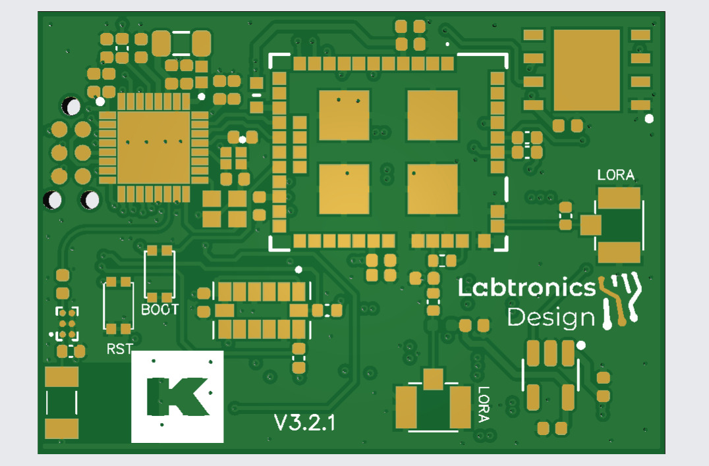
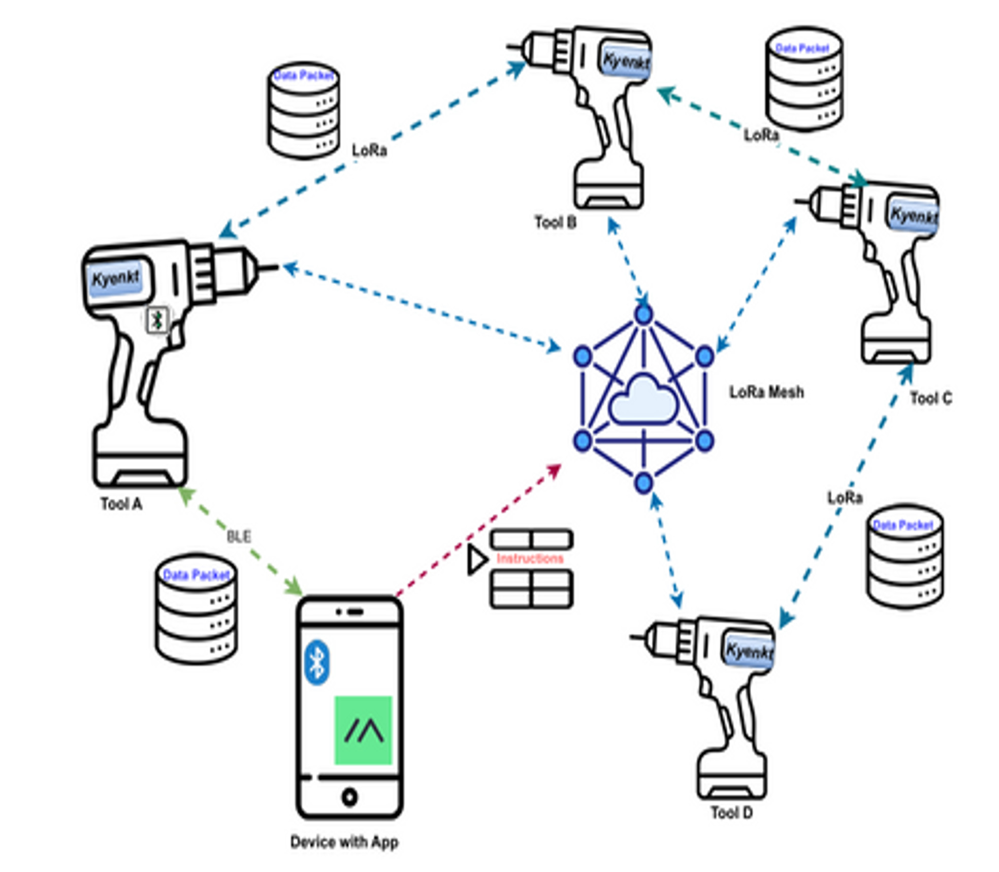

In Market (Commercial Deployment)
Labtronics Design Ltd • UK Remote
Kynekt: Smart Cordless Tool Tracking & Control Mesh
Dense 25×25 mm 4-Layer Embedded PCB with LoRa Mesh Routing, BLE 5.0, GNSS Positioning, and Remote MOSFET Tool Lockout.
ESP32-C3FH4 RISC-V
Semtech LLCC68
ATGM336H GNSS
ADXL345
4-Layer Rigid PCB
LoRa Mesh
Remote Kill-Switch
System Architecture & Hardware Specifications
Heavy equipment theft and asset misplacement incur multi-million-dollar annual losses on commercial construction sites. The Kynekt system was engineered as a covert, retrofittable telemetry and electronic lockout module designed to fit directly inside existing cordless power tool battery housing compartments (e.g., 18V/20V/24V packs).
| Subsystem | Engineering Specification |
|---|---|
| Form Factor & Stackup | Ultra-dense 25 mm × 25 mm 4-layer rigid PCB with internal solid ground and power planes, optimized for low RF phase noise and minimal EMI emissions. |
| Compute Architecture | Espressif ESP32-C3FH4 (32-bit single-core RISC-V @ 160 MHz, 400 KB SRAM, 4 MB embedded flash). |
| Dual-Radio Network Topology |
Short-Range: BLE 5.0 for low-latency smartphone technician provisioning and diagnostic pairing. Long-Range: Semtech LLCC68 sub-GHz LoRa transceiver running a peer-to-peer ad-hoc mesh protocol for site-wide telemetry without cellular SIM cards or monthly data fees.
|
| Location & Motion Gating | High-sensitivity ATGM336H GNSS module for geofence enforcement; Analog Devices ADXL345 accelerometer triggering wake-on-motion to keep the unit in ultra-low quiescent state when tools sit idle in storage. |
| High-Voltage Power Tree | Taps high-voltage tool battery terminals (16–24V DC) directly → wide-input step-down switching regulator → TP4056 charging an internal backup cell → DW01A safety PCM → low-noise 3.3V LDO for radios. |
| Intelligent Anti-Theft Lockout | Firmware-gated high-current N-channel low-side power MOSFET switch. If an asset breaches the designated site geofence or fails mesh heartbeat authentication, the tool trigger circuit is permanently disabled. |
Hardware & Network Topology Gallery

